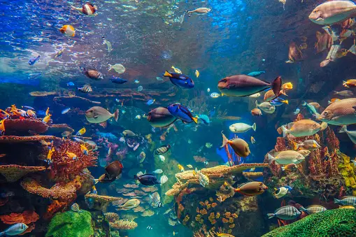
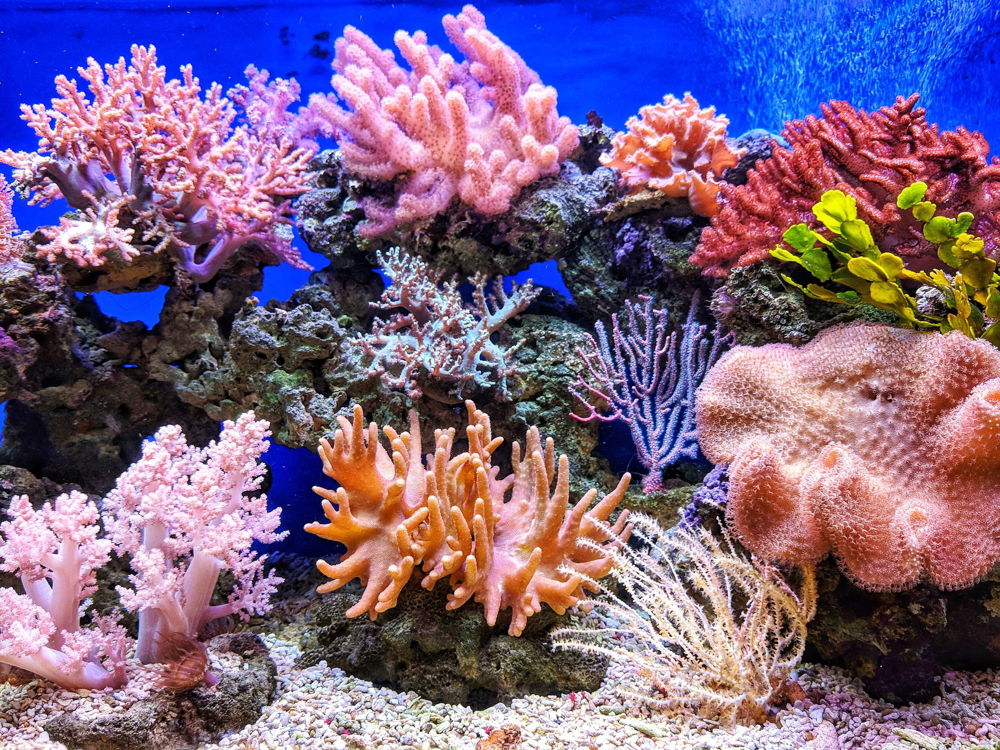
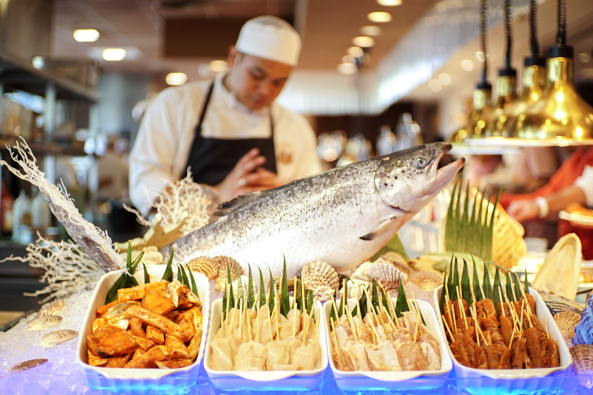
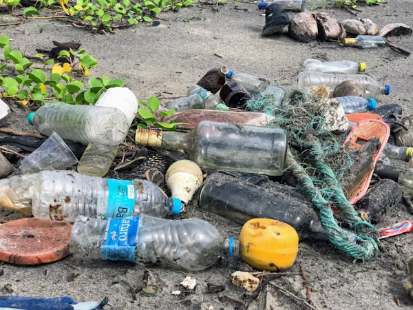
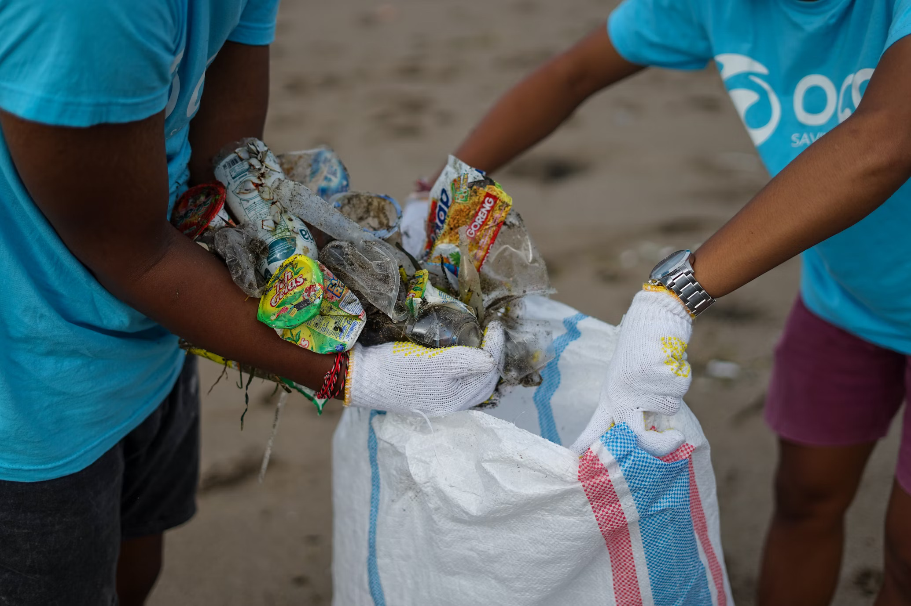

Marine life, or ocean life, refers to the plants, animals, and microorganisms that live in the ocean. From tiny plankton to massive blue whales, marine life comes in an incredible range of shapes, sizes, and species.
On this page, you'll find an overview of the different types of marine life, their habitats, and the importance of conservation efforts to protect these incredible ecosystems.
Types of Marine Life |
Marine Habitats |
Importance of Marine Life |
Threats to Marine Life |
Conservation Efforts

Types of Marine Life
There are many different types of marine life, including:
- Fish (such as salmon, tuna, and angelfish)
- Invertebrates (such as squid, octopuses, and corals)
- Mollusks (such as clams, mussels, and oysters)
- Crustaceans (such as crabs, lobsters, and shrimp)
- Marine mammals (such as whales, dolphins, and seals)
- Sea birds (such as seagulls, albatrosses, and penguins)
- Microorganisms (such as phytoplankton and zooplankton)

Marine Habitats
Marine life can be found in a variety of habitats, including:
- Coral reefs
- Estuaries
- Open ocean
- Deep-sea trenches
- Seagrass beds
- Kelp forests
- Polar regions

Importance of Marine Life
Marine life plays a crucial role in the health of our planet, providing:
- Oxygen production through phytoplankton
- Food sources for humans and other animals
- Shoreline protection from storms and erosion
- Medicinal benefits from marine organisms
- Support for commercial fisheries and tourism industries

Threats to Marine Life
Marine life faces many threats, including:
- Climate change and rising sea temperatures
- Pollution from land-based activities
- Overfishing and destructive fishing practices
- Coastal development and habitat destruction
- Marine debris and plastic pollution
- Invasive species and disease

Conservation Efforts
There are many ways to get involved in marine life conservation, including:
- Supporting organizations that work to protect marine habitats and species
- Reducing carbon emissions to combat climate change
- Choosing sustainable seafood options
- Participating in beach cleanups and coastal conservation efforts
- Spreading awareness about the importance of marine life conservation